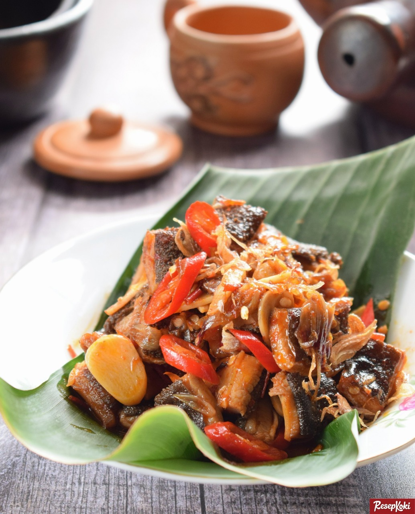

Bahan-bahan:
- 500g babat sapi, bersihkan
- 5 butir bawang merah, iris kasar
- 2 lembar daun salam
- 2 cm lengkuas, memarkan
- 2 batang serai, memarkan
- 3 sdm Kecap Manis Bango
- 1 sdt garam
- 1/2 sdt gula pasir
- 300 ml air
- 5 sdm minyak, untuk menumis
Bumbu - Haluskan
- 5 butir bawang merah
- 3 siung bawang putih
- 3 butir kemiri, sangrai
- 3 buah cabai merah
- 3 buah cabai merah keriting
- 2 buah cabai rawit merah
- 1 cm kunyit, bakar
Cara Membuat
- Rebus babat sapi bersama 2
lembar daun salam, 2 cm lengkuas, dan 2 cm jahe dalam 1 L air sampai hingga matang. Angkat, Potong-potong.
- Panaskan minyak. Tumis bawang merah, daun salam, lengkuas, serai, dan bumbu halus hingga harum
- Masukkan babat. Aduk rata.
- Tambahkan Kecap Manis Bango, garam dan gula pasir. Aduk rata. Tuangkan air, didihkan.
- Kecilkan api, lanjutkan memasak hingga bumbu meresap dan air mengering. Angkat.
- Sajikan segera ditemani nasi putih.